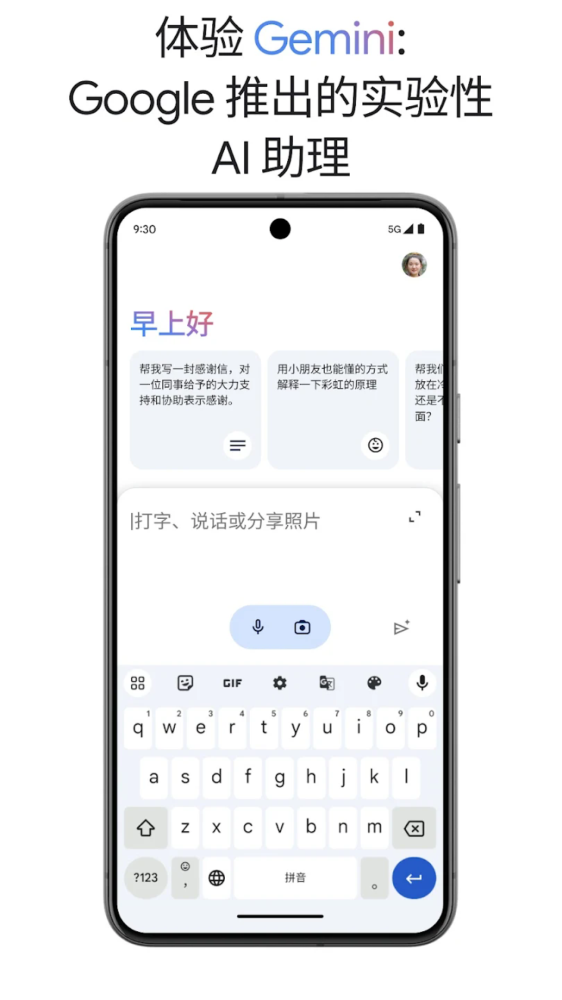
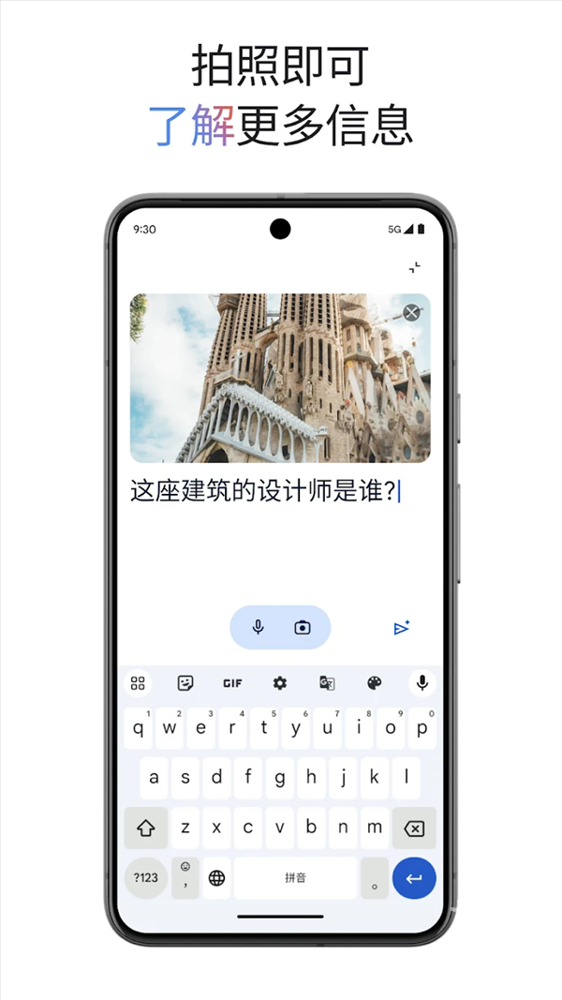

用 GoogleGemini 做完整工作流 —— 从日常问答到深度调研
从网页端初次上手到手机端 Agent 自动化，一步步带你把 GoogleGemini 的核心能力真正用起来，覆盖 Deep Research、订阅选择和常见坑点。
这篇教程的目标很明确：读完之后，你能用 GoogleGemini官网 独立完成三个层次的任务——日常问答与写作辅助、Deep Research 深度调研、以及手机端 Spark Agent 的日程自动化。不是知道功能在哪，而是真的把它跑起来出活。
准备工作
先说清楚几件事，别等你卡在半路才回头：
- 平台选择：如果你有电脑，建议先用网页端上手。网页端的 Deep Research 和 Canvas 协作画布是手机端没有的完整功能，适合做正事。手机端 App 后面会用到，但主要场景是移动中的快速查询和 Daily Brief。
- 账号：用你自己的 Google 账号直接登录，不需要额外注册。
- 网络：中国大陆网络下无法直接访问 gemini.google.com。这部分需要你自己解决网络连接问题，教程不展开。
- 免费版够用吗：够用，能覆盖日常问答、基础写作、图片生成。Deep Think 和 Deep Research 有次数限制但每天会重置。订阅方案我们放到后面说，先把免费版跑通再决定要不要掏钱。
准备好了就打开浏览器，进 gemini.google.com，右上角点登录。
第一步：网页端初次上手
登录之后你会看到输入框——别直接输问题，先花三十秒看一下界面布局。
输入框下方有一排工具栏，默认是「Chat」模式，旁边依次是「Deep Research」「Canvas」「Notebook」这些功能入口。左侧边栏可以切换历史对话、创建新对话，还能进入 Gallery（别人分享的 Gem 集合）。
先做一件事：在输入框里随便输一个简单问题，比如「帮我写一份今天的工作清单」，回车发送。你会注意到右上角有个模型选择器——默认是「Auto（自动路由）」，Google 会根据问题难度自动选最合适的模型。后面你可以手动切到 Flash（快）或 Pro（强），但自动路由对新手来说是最省心的选择。

回答出来之后，试着点一下回答下方的几个小图标：复制、重新生成、点赞、分享（生成 Gem）、还有那个不太起眼的「继续追问」输入框。这些都是高频操作，先熟悉一下。
第二步：第一次用 Deep Research 做调研
这是 GoogleGemini 和其他 AI 聊天产品最不一样的地方——Deep Research 会像研究员一样工作，而不是搜一两个网页就草草回答。
操作路径：输入框下方工具栏直接点「Deep Research」按钮。如果没看到，说明你在免费版里，Deep Research 可能藏在输入框左侧的「+」号工具面板里。
输入你的研究问题，比如「帮我调研 2026 年国内主流云服务厂商的价格对比」，然后在弹出的面板里选研究深度——先用「标准」就行。「深度」模式会花更久（可能 15 分钟以上），看更多来源，适合真正需要严谨数据的场景。
点开始之后你会看到实时进度：正在搜索、正在阅读第 X 篇文章、正在交叉比对。这段时间你可以开个新标签页干别的，Deep Research 不会打断你。
完成后报告会出现在对话里，结构通常是执行摘要 → 方法说明 → 分章节正文 → 来源引用 → 后续建议。每一个事实后面都带来源链接，可以点击跳转验证。
报告可以直接导出为 PDF、Markdown 或 Google Docs——找到报告右上角的三个点菜单，选「导出」。如果你还要继续和 AI 讨论这份报告，直接在下方输入框里追问就行，AI 知道你在说哪份报告。Deep Research 的进阶参数调优和更多案例，可以去 GoogleGemini文档 里翻，里面写得很细。
第三步：手机端 Spark 和 Daily Brief
网页端解决了重任务的问题，但真正能把 Gemini 融入日常的是手机端 App。
先从官方下载拿到 GoogleGemini App，用同一个 Google 账号登录。打开之后你会发现界面比网页端简洁很多——输入框 + 历史对话 + 底部 Tab 栏（Chat / Spark / Discover / Me）。
Spark Tab 是重点。它的 Daily Brief 功能每天早上自动帮你扫 Gmail、Calendar 和 Tasks，生成一份个性化简报，直接推到 App 里。简报分四个模块：今日重点（Top of Mind）、今日日程（Schedule）、邮件精选（Email Highlights）和未来几天的预安排（Looking Ahead）。
设置路径：Spark Tab → 右上角设置 → Daily Brief。你可以完全控制：
- 开/关整个 Daily Brief
- 设置推送时间（默认早上 7 点）
- 关掉 Email 扫描（只看 Calendar）
- 告诉 Spark 你的优先级（「工作日程优先于个人邮件」）
里面有个很反直觉的设计：Spark 不是机械地拼装信息，它会做优先级判断——比如识别出「你下午 3 点到 4 点有个空档」，然后主动建议「要不要约 Alex 聊聊下周的方案？」。每条待办事项下方都有快捷操作按钮：创建提醒、查看完整邮件、起草回复草稿、标记完成。

常见卡点
卡点一：模型选择器太乱，不知道选哪个
GoogleGemini 支持的模型非常多：Flash、Pro、Ultra、Deep Think 模式、还有 Nano Banana 图像模型。新手第一次进模型选择器绝对会懵。
实用建议：保持「Auto（自动路由）」就行。Google 的自动路由会根据任务难度自动切换模型——简单问答用 Flash（快且省 token），复杂推理自动切 Pro 加 Deep Think。你手动选的话反而容易浪费 Pro 的配额。
只有在你明确知道自己要什么的时候才手动切：比如你专门想玩 Deep Think 的长推理，手动切到 Pro 之后记得把 Deep Think 开关打开。
卡点二：订阅方案看不懂，怕花钱
2025 I/O 之后 Google 把订阅体系重新命名了，新旧对照很容易混淆：
| 旧方案 | 新方案 | 价格 |
|---|---|---|
| Gemini Advanced | Google AI Pro | $19.99/月 |
| （之前没有） | Google AI Plus | $9.99/月 |
| （之前没有） | Google AI Ultra | $249.99/月 |
判断要不要订阅很简单——看你有没有高频用到这些 Pro 专属功能：Deep Think 深度思考、完整 Agent 能力、更高额度的 Deep Research、Nano Banana Pro 4K 图像、Omni 视频生成、更大的 Notebook 存储。
如果你只是日常问答和偶尔用 Deep Research，免费版够了，每天次数重置。Plus 档适合主要想升级模型但不需要 Agent 的人。
卡点三：Deep Research 报告质量不稳定
有时候你会发现 Deep Research 引用了一些不靠谱的来源（低质量博客、过时信息）。这不是 AI 笨，是它在特定领域里没有足够的权威来源可选。
解法：研究开始前手动在输入框里加一句限定——「只引用权威来源（如官方文档、行业报告、主流媒体），忽略个人博客」。这能显著提升引用质量。另外，时效性强的话题（比如「今天刚发布的产品」）别等 Deep Research 自动搜，先自己在 Google 搜一遍核心新闻，再把链接喂给 Deep Research。
进阶玩法
把上面三步跑通之后，你可以试试几个进阶方向：
- Notebook 模式：在输入框工具栏创建 Notebook，把 Deep Research 的报告拖进去，然后和 AI 一起编辑、写代码、生成图表。Notebook 的存储也计入你的 Google 账号。
- Gem 分享：把你常用的 prompt 模板存成 Gem，在 Gallery 里可以看到别人分享的现成 Gem，直接拿来用。
- Agent 自动化：在手机端 Spark 里逐步开放的 Agent 执行能力，可以让它帮你自动完成多步任务——比如查机票、比价、生成行程，最后发邮件给同事。这块还在迭代，但已经能跑简单的自动化场景了。
关于这套资料，最后说一下备份的事——我习惯把整理好的 GoogleGemini 使用文档放在三个仓库里方便随时查阅和国内访问：GitHub 主仓库、Gitee 镜像以及 GitCode 的副本，路径都是「最新版/GoogleGemini」目录下，直接克隆就能拿到完整的 markdown 文档。